Ties
Ties are notations in music in which two notes (usually the same note) are "tied" between two measures. In the example below, the E at the end of the first measure is "tied" to the E at the measure of the second, giving it a sense of being a half note.
  |
Single note tie |
 |
Chord tie |
An example and its braille notation:
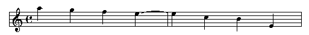
Slurs
Slurs are notations that indicate to the musician that the music is to be sung or played smoothly. In braille music, you can have a "short" slur and a "long" slur. A short slur if the slur covers four or less notes, and a long slur covers five or more notes.
The basic notation is shown in the table below:
|
Short slur |
| . . . . . |
Long slur |
 . . . . . . . . . .
 |
Bracket slur |
Some examples:
- Simple slurs, no more than four notes each:
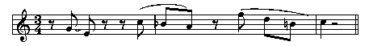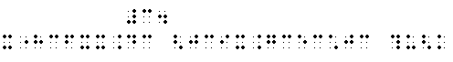
- Long slur covering eleven notes. There are actually two techniques to handle this: the first shows the use of doubling, and the second shows the use of the bracket slur
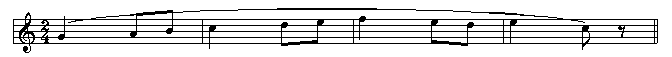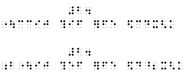
- Several short slurs and a long slur. Notice that when you have "overlapping" slurs, the bracket slur sign is used instead of the "doubling" technique.
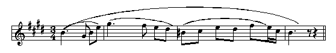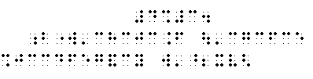
- Overlapping slurs (ending on one note, another slur starting on that ending note). As in example 2 above, there are two choices on how to braille this, the first with brackets and the second with doubling of single slurs:
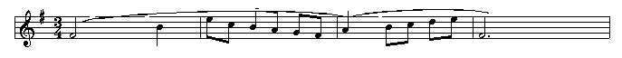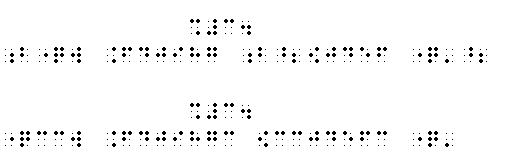
- In Example 5, we see a long slur overlapping two tied quarter notes. We only show this brailled using bracket notation, but you could also use doubling of single slurs.
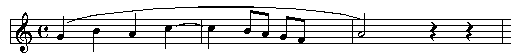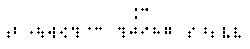
|
 Tჸe $_hodor bARionlegitim@.
Tჸe $_hodor bARionlegitim@.